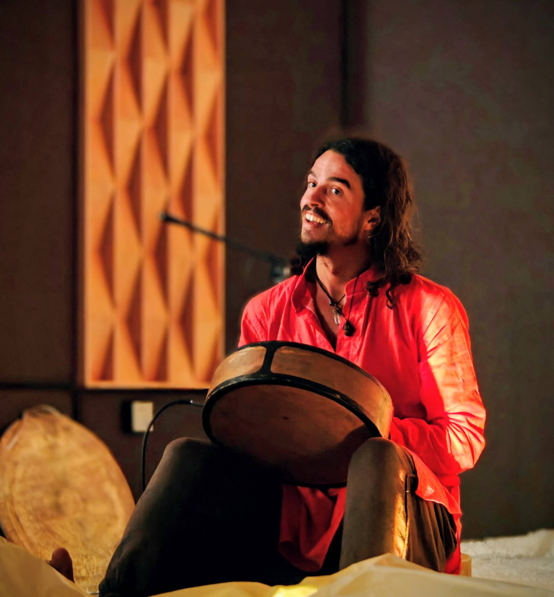
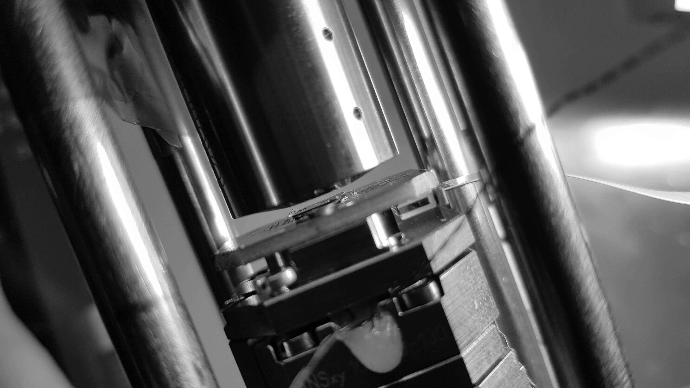
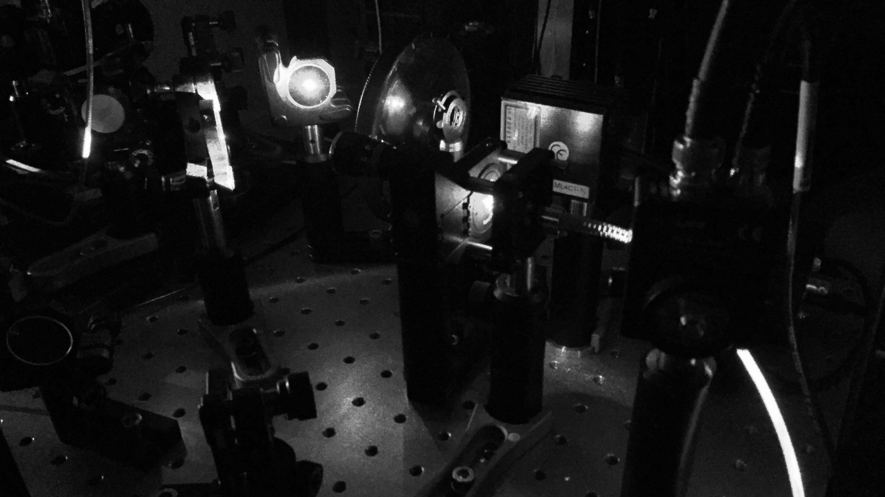
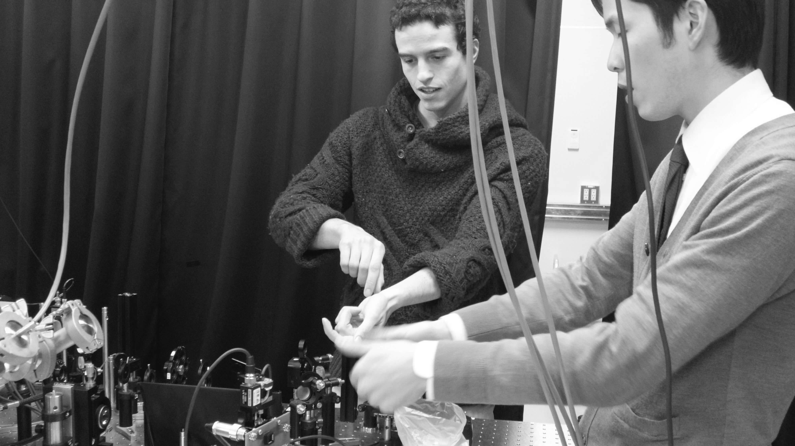
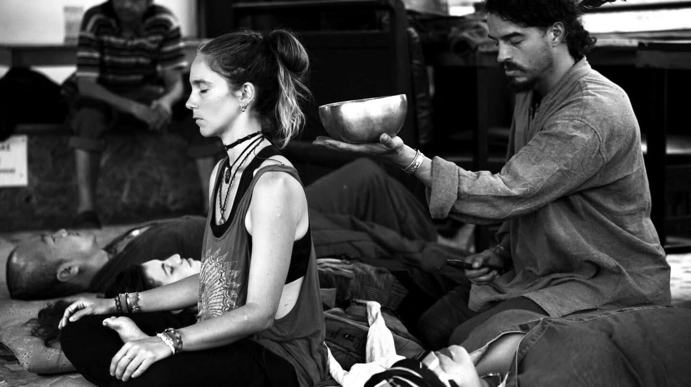
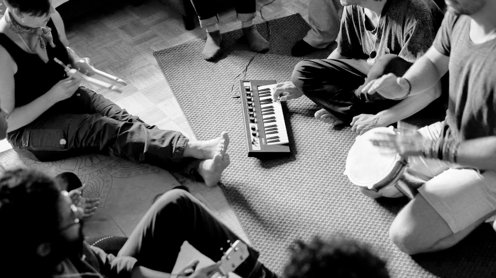
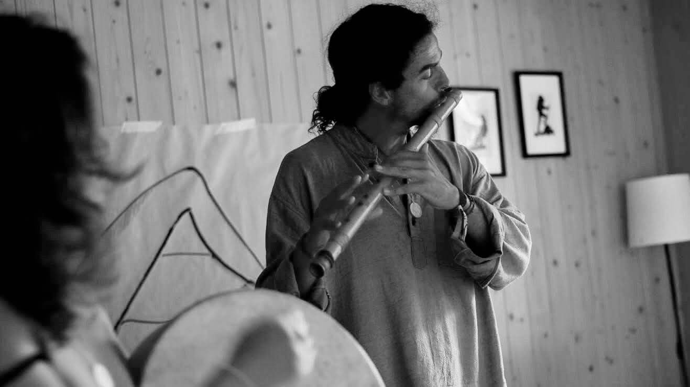
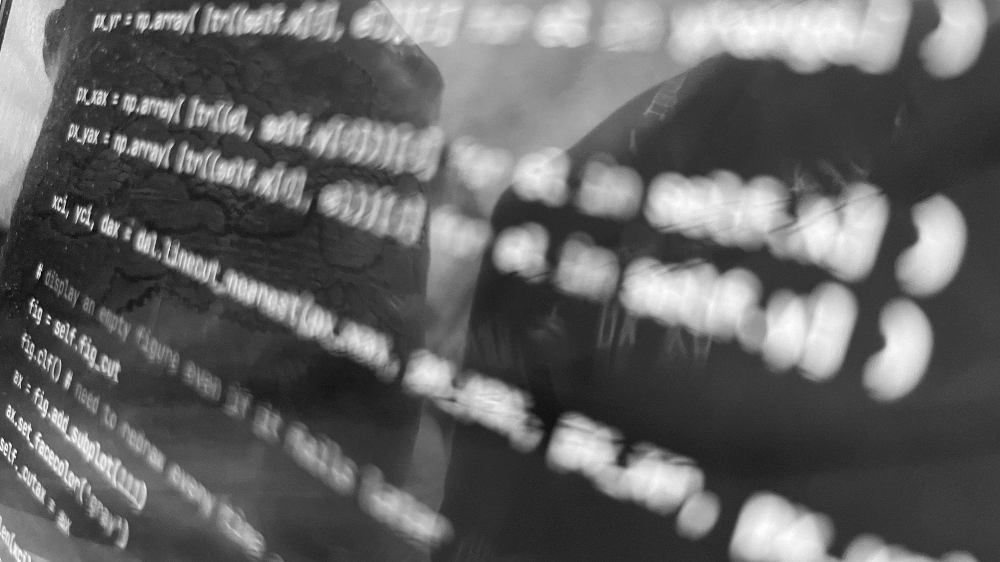

zürich, switzerland
music and bodywork by almapola
four areas of work, one instinct: to notice what usually passes below the threshold. the vibration in an atomically thin crystal. what a body says when words don't reach. the moment an improvisation turns into a conversation. the shape hidden inside a dataset. different material each time, same act — tune in, and there is more there than expected.

consulting
i did my phd at eth zürich in the quantum photonics group, researching ultrathin crystals — transition metal dichalcogenides and graphene — with optical spectroscopy. that work is the starting point for a different kind of consulting: putting artistic practice and quantum-physics research into direct conversation, in both directions.
in practice this ranges from advising an artist on how a physical phenomenon can become a working material, to longer collaborations. if you are curious what this could look like alongside your own work, get in touch.



1:1 session
a session brings you into a relaxed space. we begin with a small sound bath on singing bowls to tune in, move into thai massage to ease muscular tension, and close with reiki energy work to support the body's own capacity to regulate itself. if there is a particular place asking for attention, or a particular way you would like to be touched, say so — i work intuitively and adapt to what is actually needed on the day.
i see touch and sound as body languages, the same way i see music: ways two nervous systems can co-regulate without going through words.
sessions are priced on request — write to me and we will find something that works.

jams · classes · events
an experimental jam format built so that beginners and experienced players can share the same room. we start with an hour of warmup — waking up the body and the voice, practising giving and taking space, connecting playfully with the instruments and with each other. then the jam opens completely: everyone listens, and everyone takes their space when they feel it, each in their own way. those moments where the music suddenly connects are the whole point.
have a space or an event where a spielzimmer could happen — a company gathering, a party, a festival? let's talk. or simply come to one of the regular sessions.
we improvise together, going straight into a jam and letting things emerge — a conversation held in music. after a while we pause, feel into the body, and put into words what it is telling us: what journey we just went through, what happened between two nervous systems. sometimes i offer an input, or a concrete task — i will stay steady on one melody, find your way to tune into it; or, let's hold these same chords and use that stability to go into conversation.
it is a reflected, empowering way of improvising. the focus is on practising how to play together, and on trusting the subtle signals that arrive in your own system.


custom tools
most of what we understand about the world arrives through the sensors at our nerve endings. data is the other route — but only once it has been shaped into a form we can perceive. with data analysis in python and programming in java and other languages, i build analysis and visualisation tools around the specific question you are trying to answer, including a visualisation tool for a project in the education sector.
bring your data, your problem, or just the idea — and let's find out what it would take to make it visible.

about
i am a musician, bodyworker and physicist. i play and teach music under the name almapola. my main instrument is the piano; i also play the osmose synthesizer, the bansuri flute from north india, and the mbira nyunga nyunga from zimbabwe, which i like for building dreamy soundscapes.
what holds my attention is the subtle interplay between bodies — movement, sound and observation merging into something collective. one playground for that is contact improvisation, where i both play music for dancers and facilitate workshops. i see movement and music as tools our bodies use to have conversations that are hard to reach through words, and the same fascination carries into bodywork, where thai massage and reiki become body languages for co-regulating.
it also carries into physics. i did my phd at eth zürich in the quantum photonics group, working on ultrathin crystals with optical spectroscopy, and the question underneath it was never only how to measure a subtle signal — but how far it can be experienced.
the four areas of work on this page are separate practices. the instinct underneath them is the same one.
get in touch
a question, a project, an idea for something that could happen — write to me and let's see what emerges.